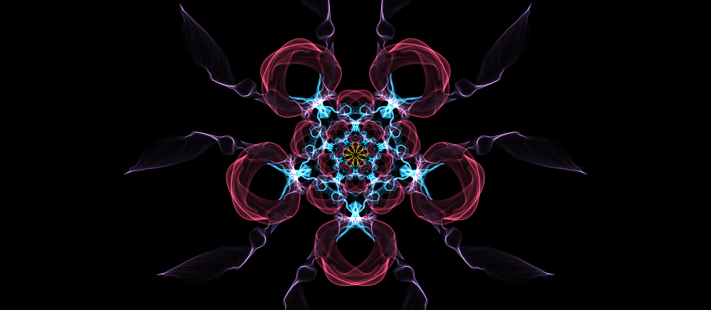

My Design Manifesto
Design is powerful.It is like a bridge that connects people through imagery, type, and visions.I want to make a difference in the society.I want my design to transmit a positive message. Principles of design such as hierarchy, space, contrast, and emphasis guide my work.

Video
I LOVE to create and I can’t imagine a version of myself that doesn’t include design. Design has become an extension of my mind, and body.
Promises
- I will learn at least a new skill every week in Adobe programs (Photoshop, In Design, After Effects, Illustrator).
- I will educate my eye through conferences, video tutorials, or documentaries about design.
- It will be like a rollercoaster-with its ups and downs but I am not giving up. I will find a way to make it fun anyways!
- Courage, commitment, passion, and intuition will always be my companions in solving Design problems.
- As much as I love pixels, my creative process will always begin with hand drawn sketches.
- I will be patient.
- I will save everything. I might use it for future projects.
- Whenever I feel like my creative process is not going smoothly, I will take short breaks in between- I will go for a walk, eat dark chocolate, dance, or listen to Greek, Albanian, or Latin music.
- I will also work on my posture while working in the computer so that I don’t end up like a real Golden Ratio.
- I believe in my artistic abilities, sharp eye for details and passionate self. I am ready to work hard and willing to do my best to make a difference and move the society forward through visual communication.